8 DecarbFin
8.1 Fostering aviation success to sustainable finance
As financing aviation decarbonisation proves challenging, due to limited access to sustainable finance and evolving regulatory landscape, DecarbFin provides you with tools and information necessary to facilitate your access to public and private sustainable funding opportunities.
Check out also the Bluebook, a guide for enhanced ESG reporting and compliance with the EU Taxonomy and CSRD to help you navigate this complex regulatory and reporting landscape.
Sections
Fund Pathfinder
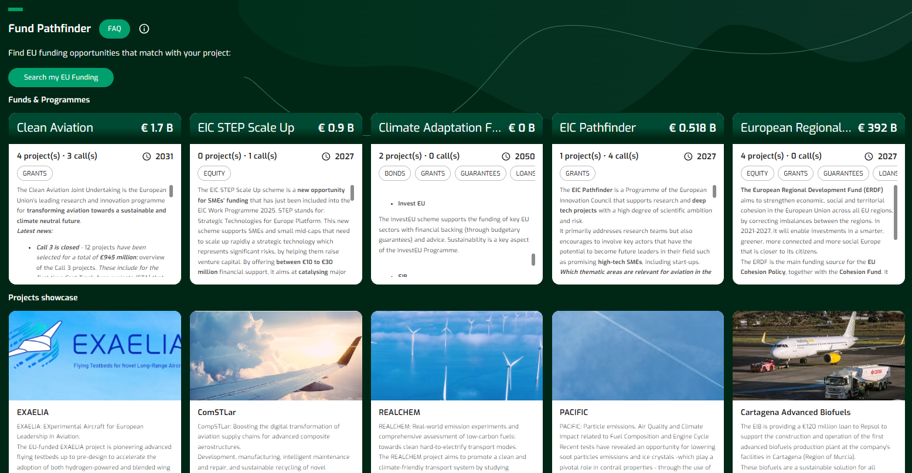
Funding Booster
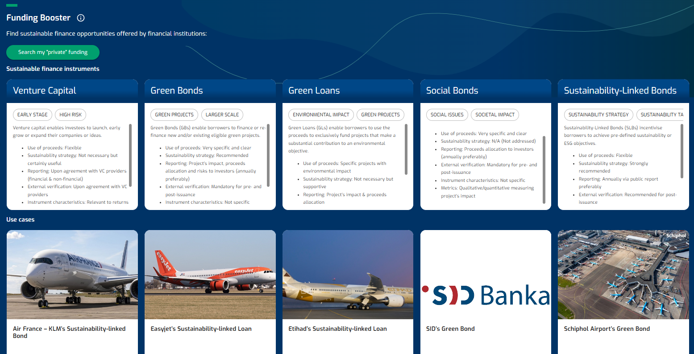
Bluebook
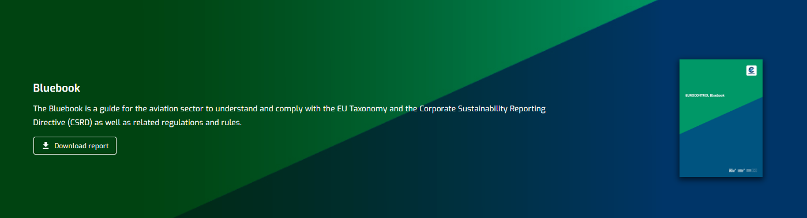
8.2 Functionalities
Functionalities
Fund-Pathfinder
- Funds Overview: View the Funds & Programmes overview
- Search My Funds: Filter My Funds and Calls
- Funds In detail: View the Funds, the Programmes and the Calls’ details
- Project Overview: View the Projects overview
Funding Booster
- Instruments Overview: View the Sustainable Finance instruments - Summary
- Instruments Details: View the Sustainable Finance instruments - Details
- Instruments Summary: View the Use Cases
- Dictionary: View the Dictionary of Terms
- Search Instruments: Search and Filter my “private” Sustainable Finance instruments
- Essential View: View the Essentials (ESG Frameworks, Roadmaps
- Dashboard: View the Flynance dashboard
- Bluebook: Download the Bluebook
8.3 DecarbFin FAQ

Default
FAQ for Fund Pathfinder
Output
The FAQ is presented for the Fund-Pathfinder.
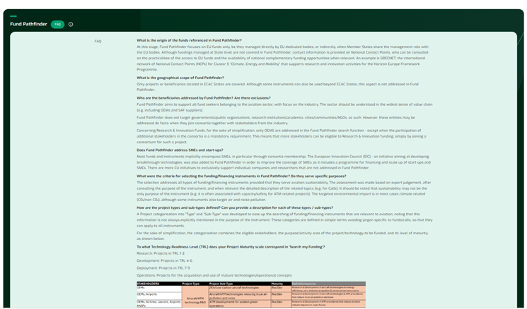
Data
The FAQ summarises the scope of Fund Pathfinder under a list of given Q&A defining:
geographical scope,
programme/fund scope,
stakeholders addressed,
funding options,
project (sub-) types,
project maturity.
Definition
Beneficiaries:: aviation stakeholders benefiting from the EU funding programmes included in Fund Pathfinder;
Result type: search results that correspond to either a Fund, a Call, or both;
Fund: a EU funding programme or financing instrument;
Call: a specific funding opportunity (often a grant) for a given Fund/Programme, with a specific time window when applicants are invited to submit under their Call for Proposal;
Technology Readiness Level (TRL): a method used to assess the maturity of a particular technology;
Project type/sub-type: project categorisation according to eligible stakeholders, purpose of project and maturity level.
8.4 Funds & Programmes overview
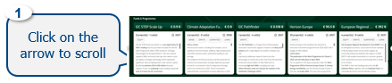
Default
All Currently available Funds & Programmes
8.5 My Funds and Calls
Query
Two methods for searching
- Quick general query: you may use the filters at the top of the page: State, Stakeholder, Keyword: you can select one State, one or multiple Stakeholders and optionally Keyword(s).

Refined query for specific project types: You may use the filters on the left hand-side, where all filtering combinations are possible:
- Result type (Fund/Call),
- Status (Active/Upcoming…),
- Funding Type (Grant, other…),
- Project maturity,
- Project Type (purpose).
The search can combine filters at the top and the left of the page.

Note on Result Type: The query can be made on “Funds” or “Calls”, or both combined. “Calls” are instantiations of “Funds” meaning that they are more focused and may only target a subset of the project types defined in the corresponding “Fund”.
Output
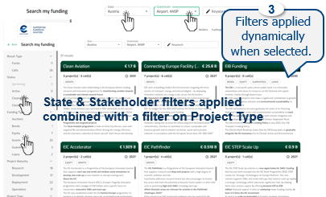
8.6 Funds, Programmes and Calls details
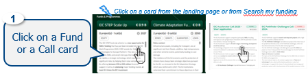
Default
Sections appearing in a Fund: Description, Funding types, Calls, Other support, Funding principles and rates, Project Maturity, Eligible States, Aviation related cases, References, Contact.
Sections appearing in a Call: Description, Funding types, Call total budget, Funding ratio, Call topics.
Output
The Funds & Programme or Calls details are displayed. The navigation is managed from the navigation index on the left-hand side.
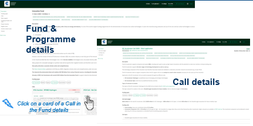
Data
The information is sourced from the official EU websites and/or from the website of the specific programme/fund/call.
Definition
- Funding type(s): type of funding resource (e.g. grant) or financing instrument (e.g. loan, bond, equity…)
- Submission: process of providing all necessary documents before deadline when applying for an EU funding opportunity
8.7 Projects overview

Default
Current or past Projects, publicly available, that have benefited from EU Funding and are relevant for aviation decarbonisation.
Output
The Projects are presented on the carrousel.

Data
All projects showcased and their descriptions are sourced from the official sites of the projects or from relevant EU websites.
Definition
Projects showcase: A (non-exhaustive) selection of publicly disclosed projects, that have benefited from EU Funding and are relevant for aviation decarbonisation.
8.8 Finance instruments - Sustainable Summary
Default
Sustainable finance instruments offered by the financial institutions: sustainability-linked loans, green bonds, sustainability-linked bonds, green loans, social bonds and venture capital.
Output
Carousel of the summary cards of sustainable finance instruments located in the landing page constitute a very structured summary of the full description of sustainable finance instruments.

Data
Public data available in various websites with focus on ICMA resources.
The selection of options is based on historic transactions pertaining to the aviation industry coupled with two extra alternatives for social and early-stage projects.
Definition
Please consult the Dictionary of terms function.
Tip: By clicking on any of the cards in the carousel, a longer description of the sustainable finance instrument appears – please see next page.
8.9 Sustainable finance instruments - Details
Default
View the following items:
The Description of the instrument,
The recorded range of aviation-related volumes,
Areas of Eligibility,
Potential Use of Proceeds,
Instrument’s Characteristics,
Procedural Framework,
Sustainability Strategy,
Key Performance Indicators,
Reporting Needs,
External Verification Needs and Completed with the relevant (if any) Use Cases corresponding to that specific instrument.
Output
Sustainable finance instruments are presented in detail. The navigation can also be managed from the navigation menu on the left hand-side.
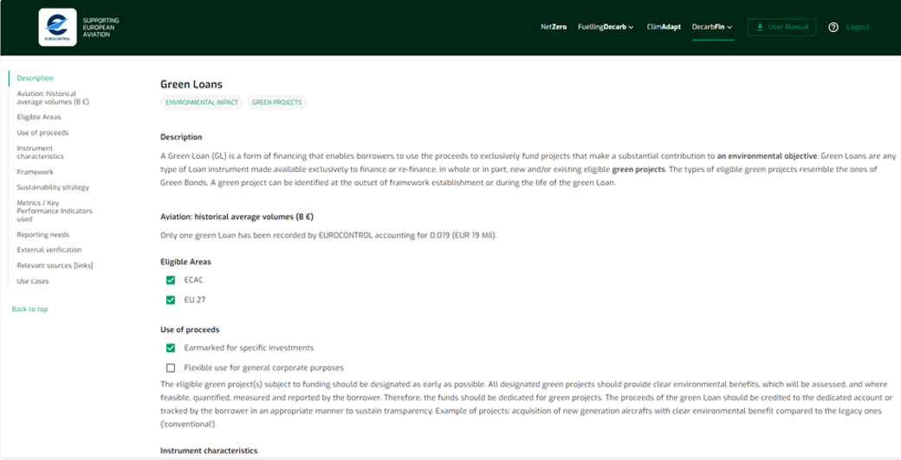
Data
All information is sourced from publicly accessible sources which are located at the bottom of the page.
Definitions
Please consult the Dictionary of terms function
8.10 Use cases
Default
A selection of diverse sustainable finance transactions or past Use Cases from the global aviation sector. They constitute financial deals between borrower companies active in aviation and financial institutions. These deals are subject to ESG-related financial conditions.
Output
Each Use Case outlines a single transaction with details on:
State,
Type of stakeholder,
Organisation,
Amount asked,
Use of proceeds,
KPIs used,
EU Taxonomy relevance,
Transaction year,
Source.
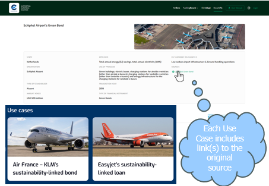
Data
Public data mainly by press releases from involved parties or articles mainly at bank websites.
Definitions
Please consult the Dictionary of terms function.
8.11 Dictionary of terms
Default
List of short explanations and definitions of terms appearing in the Funding Booster functionalities .
Output
Each term is categorised under the Funding Booster’s functionality it belongs due to times of appearance. Each term is shortly explained with examples provided sometimes.
Data
All information is based on internal ASU validated information/knowledge and/or public acknowledged websites.
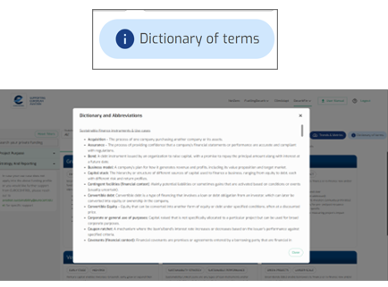
8.12 My “private” funding and my Sustainable Finance instruments
Query
Type of stakeholder: definition of stakeholder type
Project purpose: selection of the purpose of the proceeds (project – based or non-project based)
Strategy and Reporting: profiling of sustainability strategy and reporting capabilities of the company

Output
List of search results pertaining to sustainable finance instruments
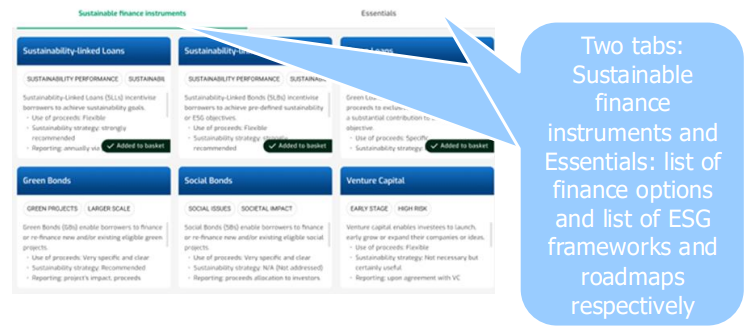
8.13 Essentials
1. ESG Frameworks
Default
View the following items:
Purpose of the framework
Focus Areas
Key Highlights
Categories of ESG metrics
Target Audience
Relevance with Aviation Sector
Where to Report
Cost of Use
Target Users
Reporting Period
Short Conclusion
Output
Each ESG framework is presented in detail. The navigation can be also managed from the navigation menu on the left side.
Data
All information is sourced from publicly accessible sources which are indicated at the bottom of the page. Some of them correspond to the official site of the ESG framework, where applicable (ie. CDP).
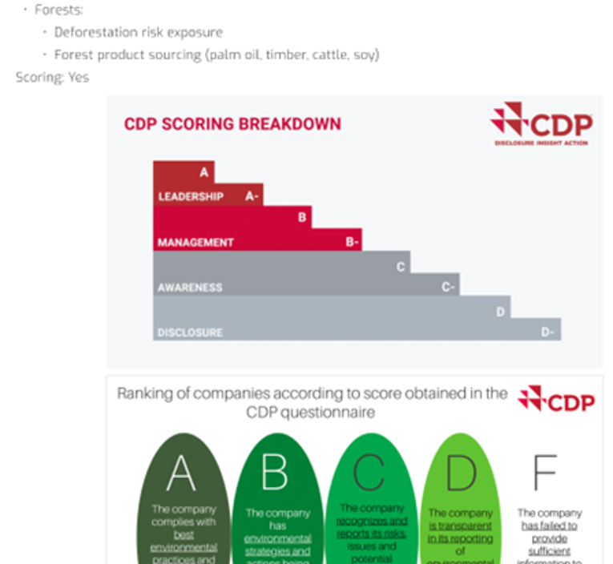
Definitions
Please consult the Dictionary of terms function.
2. Roadmaps
Default
View the following items: - Description of the roadmap
Strategy Goals it entails
Main Features
Technological solutions put forward
Policy and Market Mechanisms
Investment and Financing
Operational and Infrastructure Changes
International Collaboration
Timelines/Milestones under its decarbonisation pathways

Output
Each roadmap is presented in detail. The navigation can be also managed from the navigation menu on the left side.
Data
All information is sourced from publicly accessible sources which are located at the bottom of the page. They correspond to the official site of the roadmap release (ie. ICAO, IATA, SBTi, etc.).
Definitions
Please consult the Dictionary of terms function.
8.14 Flynance dashboard
Default
Volume transactions per State (ECAC & Global)
Sustainable financing volume per instrument
Sustainable financing volume per Key Performance Indicator
Proceeds allocation per instrument and per stakeholder
Key Performance Indicator used per stakeholder type
Output
Key volumes per geography, over time and per instrument, per Environmental, Social or General context, per stakeholder type and use of proceeds and finally, indicators appearing in transactions.

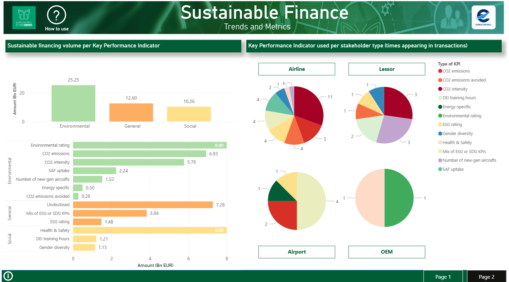
Data
Public data (web).
For a comprehensive list of sources, check the References section.
Definitions
Please consult the Sustainable Finance dashboard for more information on how to read and interact with the visuals.
8.15 Funding basket
Funding Basket: a space to temporarily store selected information from Fund Pathfinder and Funding Booster and export to a word format.
Default
The basket view consists of a Fund Pathfinder (EU funding) and Funding Booster (private funding) space: the user can select/add, view, and remove all the funds/calls and financial instruments previously selected. They can also add, view and remove ESG frameworks and Roadmaps.
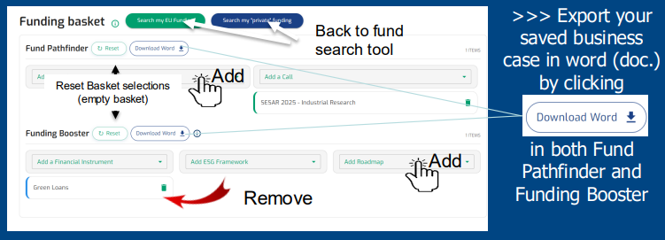

Output
Fund Pathfinder: Sustainable business case including a selection of Funds and/or Calls including relevant EU funded project cases.
Funding Booster: Sustainable business case defined by a single, selected financial instrument, and may include a linked ESG framework and/or a linked Roadmap.
8.16 Bluebook
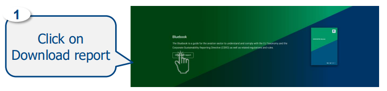
Default
Bluebook
Output
The Bluebook is downloadable from the Landing page.

Data
The Bluebook summarises the EU Taxonomy and CSRD regulations using and quoting information provided by official EU regulatory websites, material produced by EFRAG, and other non-EU advisory services.
8.17 DecarbFin journey
DecarbFin step-by-step
Funds Overview: Check the Description of a Fund: Horizon Europe
Projects: Check a funded Project’s website: BioSFera project
Search My Funds: Search for the available Funds with the criteria ‘France’ and ‘ANSP’ – Refine the search with the criteria ‘Active Calls’
Calls Overview: Check all calls attached to a given Fund: Connecting Europe Facility
Search My financing: Search for Sustainable finance instruments: Sustainability-linked Loans
Find a Use Case: Check for past use cases/ transactions: Air France-KLM Sustainability-linked Loan
Dashboard: Become aware on latest sustainable finance trends & metrics
Bluebook: Download the Bluebook
The advantages of your journey
Quickly identify EU funding options that are relevant for your projects, with initial guidance to apply, with Fund Pathfinder.
Check success stories of past and ongoing, aviation sustainability-related, EU funded projects, as a source of inspiration.
With the Bluebook, better understand the EU Taxonomy and CSRD with aviation-specific insights to help you comply with these regulations.
Build a robust sustainability business case with the right EU fund(s), private financing instrument(s), and complement it with essential ESG frameworks and sustainability roadmaps.
8.18 References
List of sources
- Successful
A321neo lease transaction to Wizz Air- ABL Corporation
- Viva
Aerobus Announces Successful Sustainability-Linked Bond Issuance ALA Noticias
- Volaris
- Sydney
Airport successfully delivers innovative Sustainability Linked Loan
- JetBlue
SLL RCF Signals a new sustainability flight path for aviation - BNP
Paribas CIB
- Adelaide
Airport
- New
undrawn five-year sustainability linked term loan facility
- Crianza
Aviation launches Sustainability Linked Operating Leases
- China s
first transition finance taxonomy launches | Dialogue Earth
- OMA
becomes the first airport operator to place a green bond in the Mexican
market
- CDB
Aviation issues the First Portfolio Sustainable Finance in the Industry
- 2022
aircraft and airline sustainable finance transactions
- EUR
500 million of green bonds to invest in sustainability of airports
- Royal
Schiphol Group N.V. successfully signs EUR 400 million Sustainable
Revolving Credit Facility
- Schiphol
issues EUR 750 million of green bonds with a tenor of 9 years
- Star
Alliance
- New
undrawn five-year sustainability linked term loan facility
- Cr dit
Agricole CIB Arranges Allegiant Travel s $100MM Revolving Credit Facility
- News | ABL Advisor
- Investors
| Hedging & Debt information
- EN-ALC
order for 111 Airbus aircraft launches Sustainability Fund
- Airbus
Annual Report 2022
- Air
France-KLM and Societe Generale announce the financing of an Air France
Airbus A350-900 aircraft
- Air
France-KLM, Air France and KLM signed two Revolving Credit Facilities
linked to ESG KPIs for a total amount of 2.2 billion
- SUSTAINABILITY-LINKED
FINANCING FRAMEWORK
- INAUGURAL
SUSTAINABILITY-LINKED BOND
- ANA
HOLDINGS Becomes World's First Airline to Issue Green Bonds | Press
Release
- ANA
HOLDINGS Announces to Issue Sustainability-Linked Bonds | Press Release |
ANA Group Corp.'s Information
- avap RNS - Avation 1st ever
Green Loan (Dec 2019)
- Volaris
issues first Sustainability-linked certificate on the Mexican market -
BBVA CIB
- Cathay
Pacific Airways closes the First Sustainability-linked JOLCO in
Asia-Pacific | Cr dit Agricole CIB
- Cathay
Pacific adopts ESG-linked corporate savings account | Credit Agricole CIB
- CALC
Announces 2023 Annual Results Steady Revenue Growth with Adj. Shareholders
Profit Surged by Four Times
- CDB Aviation Enters Into Inaugural Sustainability Linked Loan for $625
Million
- British
Airways secures another 1bn UKEF-backed facility - ch-aviation
- Air
France-KLM Issues 1 Billion High Yield Sustainability-Linked Bond Tied to
Climate Goals - ESG Today
- Etihad
becomes first Airline to issue sustainability-linked Sukuk
- Etihad
raises us$1.2 billion in first sustainability-linked ESG loan in global
aviation
- Pioneering
green loan finances BRA ATR 72-600 | News | Flight Global
- JetBlue
signs loan linked to ESG goals
- Airline sustainability-linked
finance to pick up from a low level, expects credit ratings agency
- 2023_Heathrow_Sustainability_...
- Shaping
a more sustainable future through financing | Heathrow
- China
Aircraft Leasing
- Hong
Kong Airport
- British Airways
receives commitments for 2.0 billion UK Export Finance guaranteed 5-year
loan facility - International Airlines Group
- Aena
signs a 2 billion sustainability-linked revolving credit facility
- Aviation
sustainable finance firsts: A fund, a secured loan, and an operating lease
| Ishka
- Sustainable
Finance: AF rethinks SPTs, Wizz Air and Pegasus debut sust-linked
deals | Ishka
- Chinese
institutions in aviation embrace sustainable finance | Ishka
- 1st
Transition Bond | Sustainability | JAPAN AIRLINES Corporate Information
- 2nd
Transition Bond | Sustainability | JAPAN AIRLINES Corporate Information
- 3rd
Transition Bond | Sustainability | JAPAN AIRLINES Corporate Information
- 4th
Transition Bond | Sustainability | JAPAN AIRLINES Corporate Information
- 1st
Transition Linked Loan | Sustainability | JAPAN AIRLINES Corporate
Information
- 2nd
Trasition Linked Loan | Sustainability | JAPAN
AIRLINES Corporate Information
- Jet2
plc publishes its Annual Report for 2023
- Korean Air to issue environmental, social and governance bonds | Korean Air
- Etihad becomes the first airline to raise funds tied to United Nations sustainable development goals
- SMBC
Aviation Capital closes $150 million sustainability-linked loan facility
- Swedavia Green Bond Impact Report 2021
- TUI extends 2.7 billion euros credit lines with banks until summer 2026 - terms tied to sustainability targets for the first time